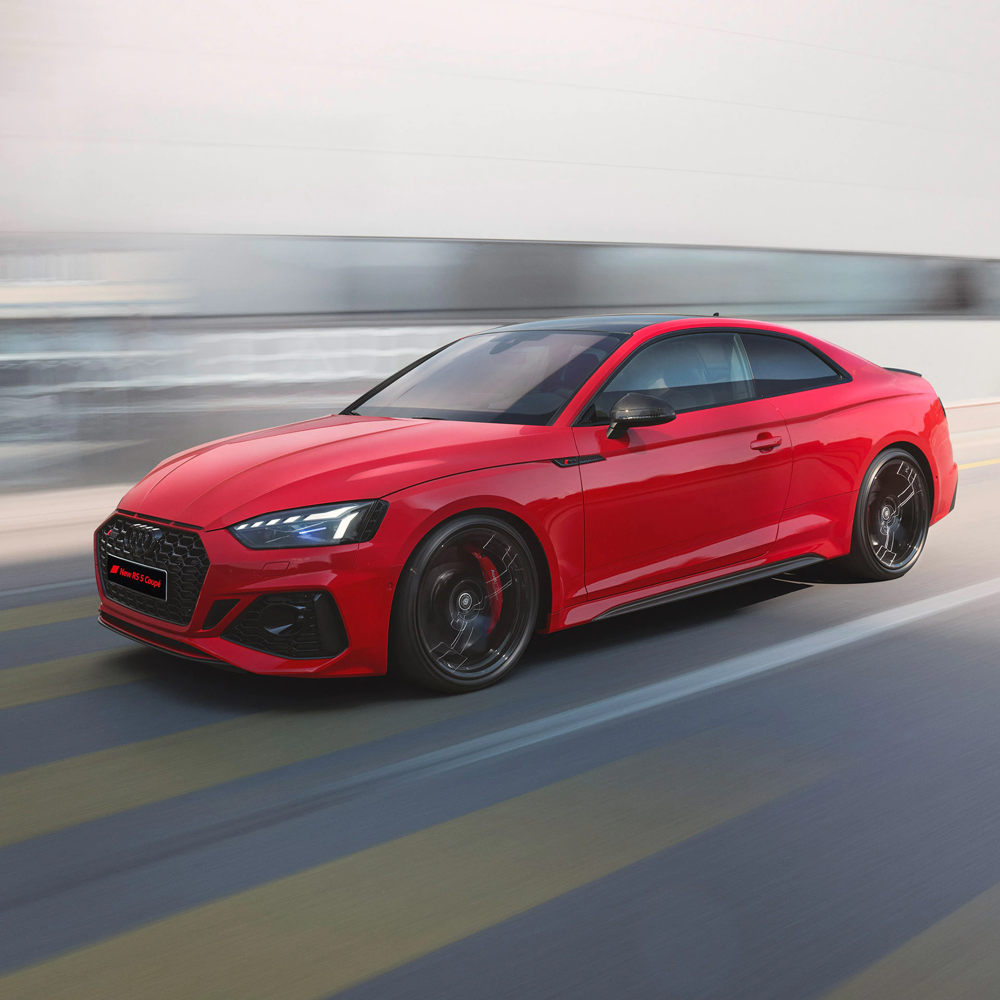

#Audi RS 5 Coupé
Гармония высших достижений.
Новый Audi RS 5 Coupé
Самое элегантное и самое бескомпромиссное купе от Audi. Его внешность — выражение динамики в чистом виде: эффектная, характеризующая мощь передняя часть, плавные линии крыши, массивный кузов и импозантная задняя часть.


450 л. с.
Мощность
600 Н·м
Максимальный крутящий момент
3,9 секунды до 100 км/ч
Разгон с места за
Индивидуальность Audi RS 5 Coupé проявляется во всём:
от крыши до мельчайших деталей
Но вы можете придать своему Audi RS 5 Coupé неповторимые черты. Например, добавить спортивности с помощью предлагаемой в качестве опции карбоновой крыши, которая благодаря своей облегчённой конструкции улучшит динамику. Или открыть новые перспективы, выбрав панорамную стеклянную крышу с солнцезащитной шторкой, которая плавно регулируется с помощью электропривода.
